The Minetest Language
1 Basics
Let’s start with an example that shows the three basic principles of developing with #lang minetest
Define images
Use images to define assets
Use assets to define game rules
Here we go!
#lang minetest ; Step 1: Define your images (define red-texture ) (define green-texture 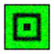) ; Step 2: Define your assets (define-block red "Red Block" red-texture) (define-block green "Green Block" green-texture) ; Step 3: Define your rules (game-rule on: block punch green do: (place-block red)) (game-rule on: block punch red do: (place-block green)) (compile-mod my-mod)
Of course, there’s nothing stopping you from combining steps 1 and 2. For example, this is fine:
#lang minetest ; Steps 1 and 2: Define your images and assets (define-block red "Red Block" 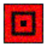) (define-block green "Green Block" 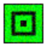) ; Step 3: Define your rules (game-rule on: block punch green do: (place-block red)) (game-rule on: block punch red do: (place-block green)) (compile-mod my-mod)
However, the real power of #lang minetest comes from leveraging the power of 2htdp/image to procedurally generate your assets. So things can sometimes be cleaner to separate your workflow into the three aforementioned steps.
Here’s a more complex example:
#lang minetest ; Step 1: Define your images (define (my-texture color) (noise (overlay (square 5 "solid" "black") (square 14 "solid" color) (square 20 "solid" "black") (square 31 "solid" color) (square 33 "solid" "black")))) (define red-texture (my-texture "red")) (define green-texture (my-texture "green")) ; Step 2: Define your assets (define-block red "Red Block" red-texture) (define-block green "Green Block" green-texture) ; Step 3: Define your rules (game-rule on: block punch green do: (place-block red)) (game-rule on: block punch red do: (place-block green)) (compile-mod my-mod)
This does the same thing as the previous two examples. However, there is now a function that can be used to produce different colored blocks:
> (define (my-texture color) (noise (overlay (square 5 "solid" "black") (square 14 "solid" color) (square 20 "solid" "black") (square 31 "solid" color) (square 33 "solid" "black")))) > (my-texture "red") 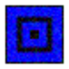
> (my-texture "green") 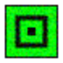
> (my-texture "blue")
> (my-texture "cyan")
> (my-texture "purple") 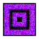
> (overlay (scale 0.5 (my-texture "green")) (my-texture "red")) 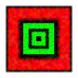
Now that we’ve seen how #lang minetest works at a high level, Let’s look at each part in more detail.
2 Images
This is a short section, but it’s really the most important.
If you’re new to Racket, you should familiarize yourself with functional programming and the 2htdp/image library by reading through the excellent book:
"How to Design Programs" at http://www.ccs.neu.edu/home/matthias/HtDP2e/
3 Block Assets
syntax
(define-block id description image)
id : identifier?
description : string?
image : image?
To do a multi-texture block, you need to do this in two steps.
First, define the block. Then override the single texture with multiple textures. To do this, we use the add-behaviour-to form.
#lang minetest (define-block piggy "Piggy" ) (add-behaviour-to piggy (tiles (list 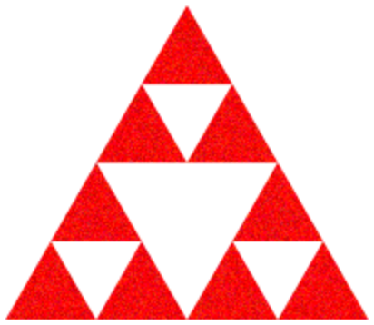 ))) (compile-mod my-mod)
Here, I’m overriding the "tiles" attribute of the piggy block.
(When using add-behaviour-to, it can help to know a bit about the Lua API for Modding Minetest. It lets you set any attribute You could set when calling Lua’s register_node function. I’m not going to re-document the Lua API here.)
4 Item Assets
syntax
(define-item id description image)
id : identifier?
description : string?
image : image?
#lang minetest (define-item zelda-thing "Zelda Thing" (tri-fract (tri-fract (triangle 10 "solid" "red")))) (compile-mod my-mod)
... where the image above evaluates as follows:
> (tri-fract (tri-fract (triangle 10 "solid" "red"))) 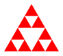
Note: It’s often nice to use the noise function to make textures look more like they belong in the world of Minetest. Here’s an example (where I made the image larger just so you could see the texturing):
> (noise (tri-fract (tri-fract (triangle 50 "solid" "red")))) 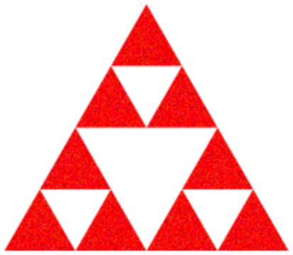
(Using define-block compiles to a Lua register_craftitem call. So if you’re interested in adding more complex behaviour, you can use add-behaviour-to to set whatever attributes you could set using that Lua call.)
5 Entity Assets
syntax
(define-entity id description image)
id : identifier?
description : string?
images : (listof image?)
Note that (unlike items and blocks) entities won’t magically appear in your inventory. You need to add a game rule to get them to spawn on some action (i.e. a block punch).
#lang minetest (define-block pig-spawner "Piggy Spawner" (list 

))
(define-entity pig "Piggy" (list 
))
(game-rule on: block punch pig-spawner do: (spawn pig)) (compile-mod my-mod)
So the default behaviour of these entities is that they run around in a rather entertaining way instead of sitting there boringly like a block.
(Also note that define-entity compiles down to PilzAdams’s add_mob function. As usual, you can reference the Lua docs and override the defaults with add-behaviour-to.)
6 Schematic "Assets"
The pairs in mappings say how colors will map to block types. You can reference your own blocks in the mapping or default blocks. Colors not explicitly mentioned in the mapping will be rounded to the nearest color that is mentioned.
For convenience the wool-mapping can be used to map all colors to the "nearest wool".
Schematics will not magically appear in game. They have to be placed as a result of a user action (i.e. a block punch).
#lang minetest (define-block spawner "Spawner" )
(define tree-schem (schematic (mapping "brown" wood "green" leaves) )) (define pig-schem (schematic wool-mapping )) (game-rule on: block punch spawner-block do: (place-schematic tree-schem) (place-schematic pig-schem)) (compile-mod my-mod)
7 Particle "Assets"
Particles are not assets. But they can be spawned when players interact with assets (items, blocks, entities).
This requires a simple game rule.
#lang minetest (define-block particle-block "Particle Block" ) (game-rule on: block punch particle-block do: (particles 20 )) (compile-mod my-mod)
8 Recipes
Recipes are created with define-recipe. You can create shaped recipes or shapeless recipes. You can also create recipes with your own blocks and items as well as default blocks and items.
#lang minetest (define-block red-block "Red Block" ) (define-block green-block "Green Block" ) (define-block blue-block "Blue Block" 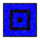) (define-block yellow-block "Yellow Block" )
; Recipe with user-defined assets (define-recipe my-recipe1 make: 1 green-block from: yellow-block blue-block) ; Recipe with default assets (define-recipe my-recipe2 make: 1 green-block from: sword_diamond obsidian) ; Shaped recipe with user-defined assets (define-recipe my-recipe3 make: 5 purple-block from: (blue-block red-block) (red-block blue-block)) (compile-mod my-mod)
9 Game Rules
TODO
10 Full API
(A lot is show by example above, but there should still be a full inventory of everything.)
TODO: Add all default item key-words TODO: Add all available callbacks TODO: List all the Lua stuff that can be overridden with add-behaviour-to TODO: List all forms and functions.